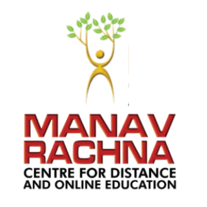

Hi, My name is Rachit
and i am a passionate

Education Experience
10th class (2021-2022)
My 10th-grade journey at Modern Delhi Public School was a blend of hard work, focus, and time management. With consistent efforts in all subjects, including the additional subject Sanskrit, I was able to score 96%. This achievement reflects my commitment to academics and the support I received from teachers and family throughout the year.
12th class (2023-2024)
My 12th class journey at Modern Delhi Public School in the science (non-medical) stream was both challenging and rewarding. Through consistent effort, focus, and determination, I secured 86%. Balancing theory and practicals taught me discipline, time management, and perseverance, shaping a strong foundation for my future academic and personal growth.

BTech CSE 1st year (2024-2025)
My B.Tech Computer Science first year at Manav Rachna University was a blend of learning and growth. I gained strong foundational knowledge in programming, data structures, and mathematics, while participating in tech events and group projects that enhanced my practical skills and teamwork.
Engineering Exploration

Radar System using Arduino
I created a radar system project using Arduino, incorporating an ultrasonic sensor and servo motor to detect and display object distance and angle. The data was visualized on a screen, demonstrating real-time scanning. This project enhanced my skills in electronics, coding, and sensor integration.

Distance Measuring Device using Raspberry Pi Pico
I developed a distance measuring device using Raspberry Pi Pico and an ultrasonic sensor. It accurately measured distances and displayed results on an LCD. This project improved my understanding of microcontrollers, sensor interfacing, and real-time data display.

Web Developer
During my first web development internship, I built projects like a personal portfolio, calculator, and landing page using HTML, CSS, and JavaScript. These tasks strengthened my frontend skills and gave me hands-on experience in responsive design and user interface development.